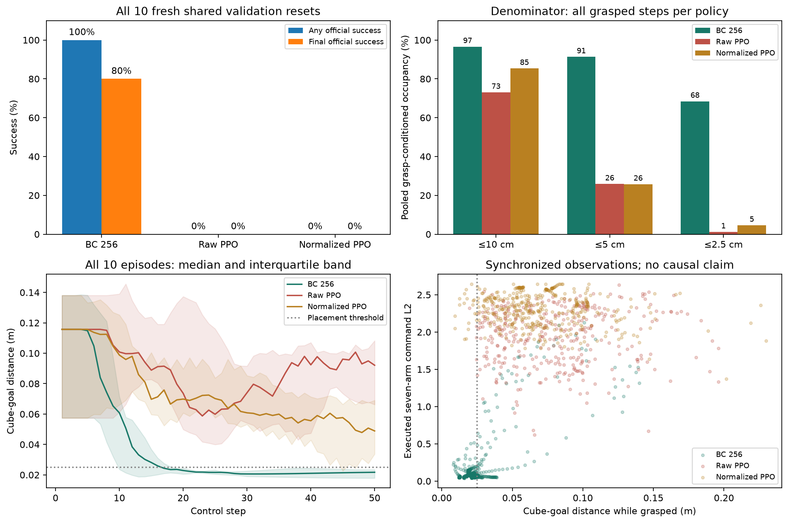

Stage 1 · P0 diagnostics · no training or final tests
Observe placement, compare the approach, inspect the commands
The observation-only stop is a hand-coded hybrid, not PPO alone. The BC comparison is a ten-reset validation diagnostic using an existing expert-trained clone and existing PPO checkpoints; expert data and training compute were not matched. No checkpoint was selected here.
Ordinary policies on the same fresh resets
All 10 seeds 130000–130009, all 50 steps, unchanged task and actions. Grasp-conditioned occupancy counts post-action states that are both grasped and within the stated distance. Correlated control steps are not independent trials.

Near-goal motion and time available
These conditional measurements include only grasped states within 2.5 cm. The command is the executed seven-arm increment vector, not a Gaussian mean. Remaining steps are measured at each episode's first grasped 2.5 cm entry; episodes that never enter have no value.
BC final-success subset: conditional inspection only
8 BC episodes ended successfully. Within that selected subset, 262/347 grasped steps were within 2.5 cm; mean arm-command L2 was 0.093 and mean maximum arm speed was 0.046 rad/s. Selected seeds: [130000, 130001, 130002, 130003, 130004, 130005, 130006, 130008].
This subset is selected by the observed final outcome and is not a performance comparison against unfiltered PPO. The all 10-episode table above remains primary.
Native videos from the first two shared placement seeds
Fixed before running, irrespective of success. Every video rerun matched its entire compact episode trace exactly; hashes are in the manifest.
Shared validation seed 130000
BC 256: any success True; final TrueRaw PPO: any success False; final FalseNormalized PPO: any success False; final FalseShared validation seed 130001
BC 256: any success True; final TrueRaw PPO: any success False; final FalseNormalized PPO: any success False; final False
Can ordinary state observations reproduce the stop gate?
Yes on all 1,020 audited reset/post-step states. The pure gate receives only raw 42 state observations. Installed schema and numeric checks identify the cube-to-goal vector at 39:42. Its float32 norm at or below 0.025 m latches zero seven-arm increments while preserving the current policy gripper. Privileged placement was audit-only and never determined a command. All 20 complete hybrid episode dictionaries matched the prior privileged override exactly.
These reproduce the earlier privileged intervention outcomes; they are not newly learned PPO successes. Zero delta retargets current measured joints every step, rather than maintaining one fixed activation pose. The first two fixed seeds did not activate for either policy, so these native videos show identical behavior and are reused only after full trajectory verification.
Raw hybrid: exact-trajectory verified native video reuse
Seed 80000; prior privileged native video reused after complete hybrid trajectory equalitySeed 80001; prior privileged native video reused after complete hybrid trajectory equalityNormalized hybrid: exact-trajectory verified native video reuse
Seed 80000; prior privileged native video reused after complete hybrid trajectory equalitySeed 80001; prior privileged native video reused after complete hybrid trajectory equality
Evidence
Predeclared protocol · All placement summaries · Observation audit · Hybrid outcomes · Raw gate vectors · Normalized gate vectors · Video and episode hashes
Source/checkpoint hashes and versions were recorded before the final instrumented run. CPU Python/NumPy/Torch RNG streams were preserved around loading and evaluation. Frozen observation statistics remained unchanged. Only the listed validation seeds were used; final test seeds were untouched.